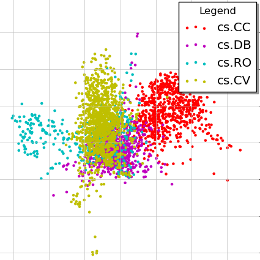
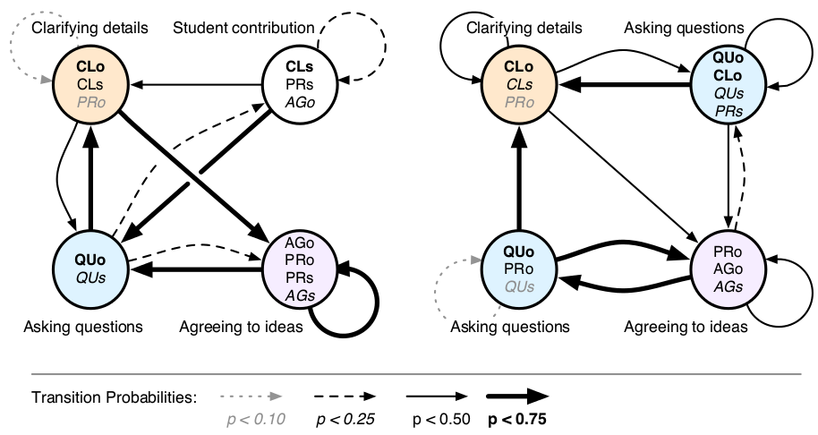
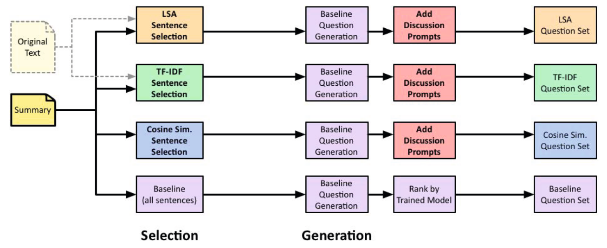
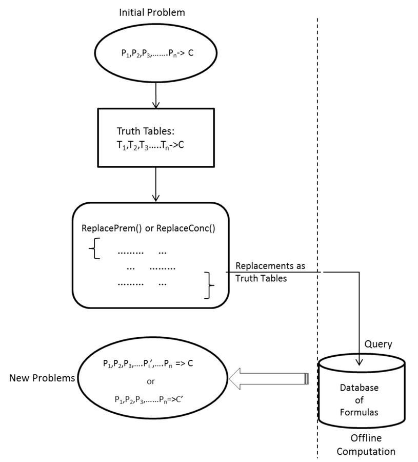

|
Research
Internships
Cornell University (May–July 2014)
|
 |
Using Preference data to embed documents in Metric Spaces
Mentored by Prof. Thorsten Joachims, Cornell Univeristy.
The work is aimed at using human interaction signals to embed documents onto a low dimensional space.
The data used is click-logs for user sessions on arxiv.org. We also try to embed the user sessions into the
same space to facilitate its application in document recommendations and personalized search.
Used Logistic Markov Embedding (LME) approach after decomposing user-sessions into first order
markov chains. Utilised the feasible set information due to presentation and introduced a de-biasing
feature vector to the model to overcome the bias because of presentation and browsing behavior.
Currently working on embedding user-sessions onto the same metric space to represent user’s intent
and hence provide better recommendations and search results.
|
Carnegie Mellon University (May–July 2013)
|
 |
A Computational Model for Quantitative Discourse Analysis in a Collaborative Learning Setting
Mentored by Prof. Carolyn P. Rosé at Language Technologies Institute, Carnegie Mellon Univeristy.
[Report] [Code] [Paper]
In this work, we aimed to identify quantitative metrics that can be used to predict task success or
discriminate between successful and unsuccessful groups involved in a collaborative learning task,
using text based chat transcripts.
Trained a discriminative model using a set of text features to automatically mark sequences and threads in a
text-based chat conversation based on structures defined by Mayfield et al.
Defined an annotation scheme based on the sequencing/threading information of dialogues to
identify knowledge flow in the conversation from speaker to speaker.
Used this knowledge flow to graphically analyze the trajectory of the conversation on Confusion
vs Consensus axes and hence finding patterns that define task success.
|
Winter School: Internship Programme in Technology Supported Education (Dec 2012)
|
 |
Question Generation for Discussion Facilitation
Mentored by Prof. Carolyn P. Rosé, Carnegie Mellon Univeristy at IPTSE Winter School, MSRIT, Bangalore, India
[Report] [Poster][Paper]
The motivation of the project was to encourage discussion and reasoning amongst students in a class
through intelligent tutors. The major implementation was divided into two major parts- Sentence
Extraction and Question Generation.
Sentence Extraction involved extracting meaningful sentences from a summary that are the best
representation/abstraction of the whole chapter. We used techniques like- LSA, Tf-Idf, Cosine
Similarity and Jaccard Coefficient and analyzed the results hence obtained.
For Question Generation, we modified a pre-existing implementation of question generation from
text to generate and rank subjective questions. For scoring and ranking questions, we used
SentiWordNet Corpus.
|
Summer Undergraduate Research Grant for Excellence (SURGE) (May–July 2012)
|
 |
Logic Studio: Automatic Problem Generation in Propositional Logic
Mentored by Dr. Sumit Gulwani (Microsoft Research, Redmond), Prof. Amey
Karkare (IIT Kanpur) and Prof. Subhajit Roy (IIT Kanpur) at IIT Kanpur.
[Report] [Poster]
The project comprised of the Problem Generation component of a larger project which aims at
building an Intelligent Tutor for Logic Course.
Our work involved generating deduction problems, hints and solutions to problems in Propositional Logic.
The three interfaces of problem generation are: from a given problem, from scratch and generating
problems that use specified axioms in their solutions. It was coded in C# language.
We exploited the truth table representations of the logical formulas for generating new valid
problems similar to given ones or completely new ones.
|
More projects here.
|
{kind=link}
{kind=link}
{kind=link}